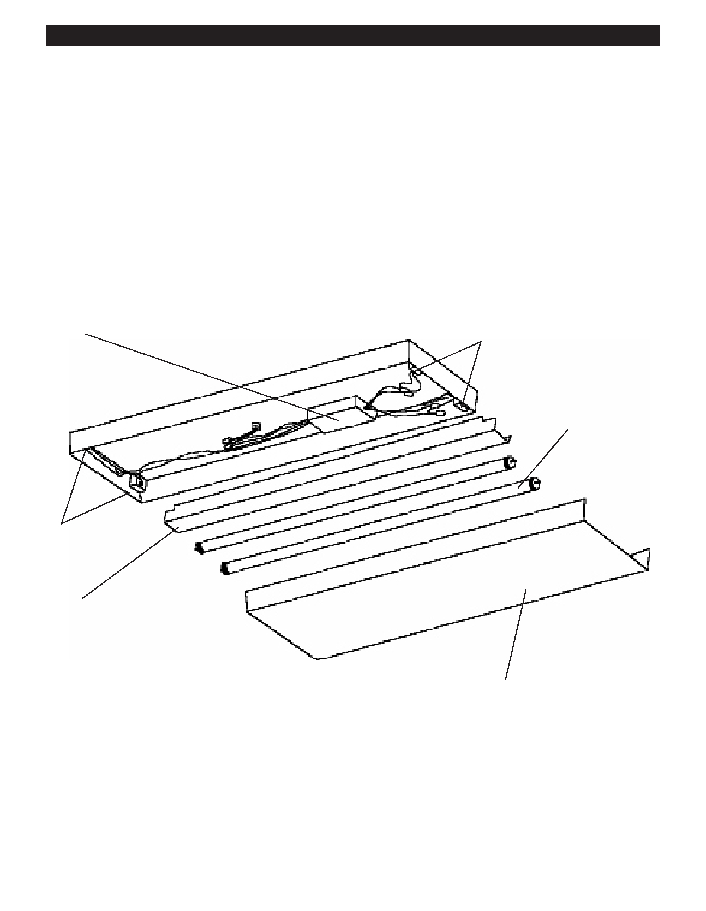

PA RT I C I PA N T R E S O U R C E G U I D E
Fluorescent Light Fixtures
Fluorescent light fixtures are also common in apartment buildings. As with incandescent
bulbs, power flows to a socket, lighting a “bulb.” In this case the bulb is a gas-filled tube.
The fluorescent light fixture uses a transformer or ballast, which manages the electrical
current going to the tube.
Fluorescent lights generate more light, use less energy, and last longer than
incandescent lights.
Anatomy of a Fluorescent Light Fixture
Ballast
Sockets
Gas-filled tube
Sockets
Cover
Shade/diffuser
Starters
Older or outdoor fluorescent lights may have a starter—a small metal cylinder with plugs on one end. The starter is a type of
switch that lets the current flow to the tube.
65